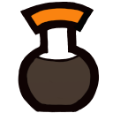

 Feed update options
Feed viewer selection:
Automatically detect a supported feed viewer
Browser default feed action
Always use
Shoyu Feed Preview
Always use
Google RSS Subscription Extension
Custom URL:
Feed browsing behavior:
Open feed in the current tab
Bookmark options:
Automatically clean up bookmark URLs